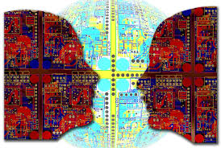
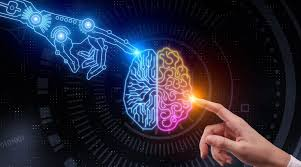
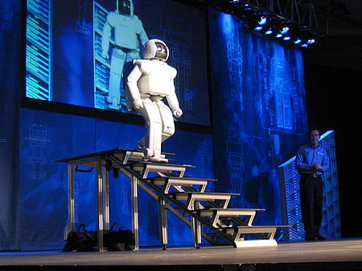

Artificial intelligence Main
Links:
- index
- artificial intelligence development
- artificial intelligence techniques
- application of artificial intelligence



..
Definition
Artificial intelligence is a branch of computer science . Much of the literature defines artificial intelligence as: “the study and design of intelligent customers.” The intelligent customer is a system that understands its environment and takes positions that increase its chance of success in achieving its mission or team mission.
This definition, in terms of goals, actions, perception, and environment is due to Russell & Norvig (2003) and other definitions also include knowledge and learning as additional criteria. Computer scientist John McCarthy originally coined the term in 1956 , and himself defined it as "the science and engineering of making intelligent machines". Andreas Kaplan and Michael Heinlein define artificial intelligence as “the ability of a system to correctly interpret external data, learn from that data, and use that knowledge to achieve specific goals and tasks through flexible adaptation.”
..
..
controversy
The field was founded on the assumption that the faculty of intelligence can be described so accurately that a machine can simulate it. This raises a philosophical debate about the nature of the human mind and the limits of scientific methods, issues that have been discussed by mythical, imaginary and philosophical discussions and stories since ancient times. There is also a debate about the nature and types of intelligence that a person possesses , and how to simulate them with a machine . Artificial intelligence has been and continues to be the cause of highly optimistic ideas, it has suffered huge setbacks throughout history, and today it has become an essential part of the technology industry , bearing the brunt of the toughest problems in modern computer science.
AI research is highly specialized and technical, to the point that some critics criticize the field's "disintegration". sub-fields of AI revolve around specific problems, the application of special tools and around old theoretical differences of opinion. The main problems of AI include capabilities such as logical thinking, knowledge, planning, learning, communication, perception, and the ability to move and change things. General intelligence (or "strong artificial intelligence") also remains a long-term goal of some research in this field.
..
History of artificial intelligence research
In the mid- 20th century , a few scientists began exploring a new approach to building intelligent machines , based on recent discoveries in neuroscience , a new mathematical theory of information , the development of cybernetics , and above all, by the invention of the digital computer , a machine that could simulate The human computational thinking process .
He established the modern field of artificial intelligence research at a conference on the campus of Dartmouth College in the summer of 1956 . They became leaders of attendance intelligence research artificial for several decades, especially John McCarthy and Marvin Minsky, Allen Newell and Herbert Simon , who founded the laboratories of artificial intelligence at the Massachusetts Institute of Technology (MIT) and Carnegie Mellon University (CMU) and Stanford, they and their pupils have written programs entranced by most people . The computer was solving algebra problems, proving logical theorems, and speaking English . By the mid-1960s, this research was being generously funded by the US Department of Defense . These researchers made the following predictions:
1965, e. a. Simon: "machines will be capable, within twenty years, to do any work can be done by man ."
1967, Marvin Minsky: "Within a generation...the problem of creating 'artificial intelligence' will be largely solved."
But they failed to realize the difficulty of some of the problems they faced. In 1974, in response to criticism from England's Sir James Lightttle and persistent pressure from Congress to fund more productive projects, the US and British governments cut funding for all undirected exploratory research in AI, the first setback for AI research.
In the early 1980s , AI research experienced a new revival through the commercial success of "expert systems", an AI program that simulates the knowledge and analytical skills of one or more human experts. By 1985 , AI research profits in the marketplace had reached more than $1 billion, and governments began funding again. A few years later, starting with the collapse of the machine market the Lisp Machine (one of programming languages ) in 1987, artificial intelligence research has seen another setback but longer.
..
Reasoning, logical thinking, and problem-solving ability
The first researchers in the science of artificial intelligence developed algorithms that simulate the sequential logical reasoning that humans do when solving puzzles, playing backgammon or logical deductions.
In the 1980s and 1990s, artificial intelligence research led to highly successful ways of dealing with uncertain or incomplete information, using concepts from probability and economics.
For difficult problems , most of these algorithms require enormous computational resources—resulting in a "combinatorial explosion": the amount of memory or time needed for computers becomes astronomical when the problem exceeds a certain size. The search for algorithms that are more capable of solving problems is a top priority for AI research.
Humans solve most of their problems using intuitive, rather than conscious, quick judgments, by step-by-step deduction that early AI researchers were able to simulate automatically. AI research has made some progress in imitating this "sub-symbolic" type of problem-solving skills: the approaches involved underscore the importance of sensorimotor skills for higher thinking; And attempts to research in the field of neural networks and simulate the structures inside the brain of humans and animals that lead to the emergence of this skil